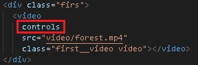
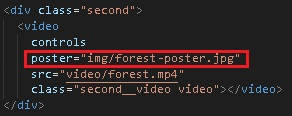
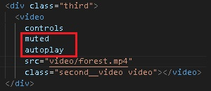
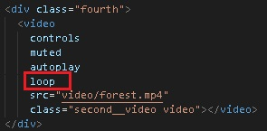

в сss мы указали 300рх ширину плеера, чтобы он стал по меньше.




Атрибут controls - добавляет панель управления
в оригинале нету панеля управления
и мы не можем включить и управлять видео
Атрибут poster - добавляем картинку
для перед возпроизведением, наше видео
начинается с черного экрана и чтобы было красиво
мы добавим картинку
Атрибут autoplay - как страница загрузилась
видео автоматически будет воспроизведена
НО в нужно отключить звук в видео
Атрибут muted - отключает звук, звук можно
включить в панеле управления
Атрибут loop - бесконечное повторение ролика


Атрибут preload со значение "auto"
видео автоматически подгрузиться
Атрибут preload со значение "metadata"
видео не подгрузиться,
но подгрузиться данные
(сколько минут длится видео)
Атрибут preload со значение "none"
ничего не подгрузиться,
в момент нажатие на воспроизвести
- начнется загрузка видео